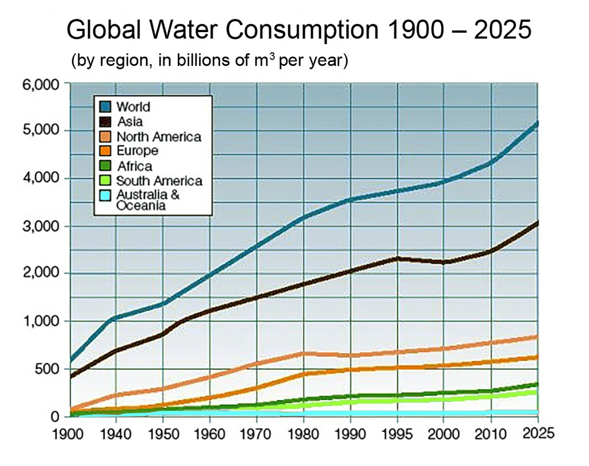
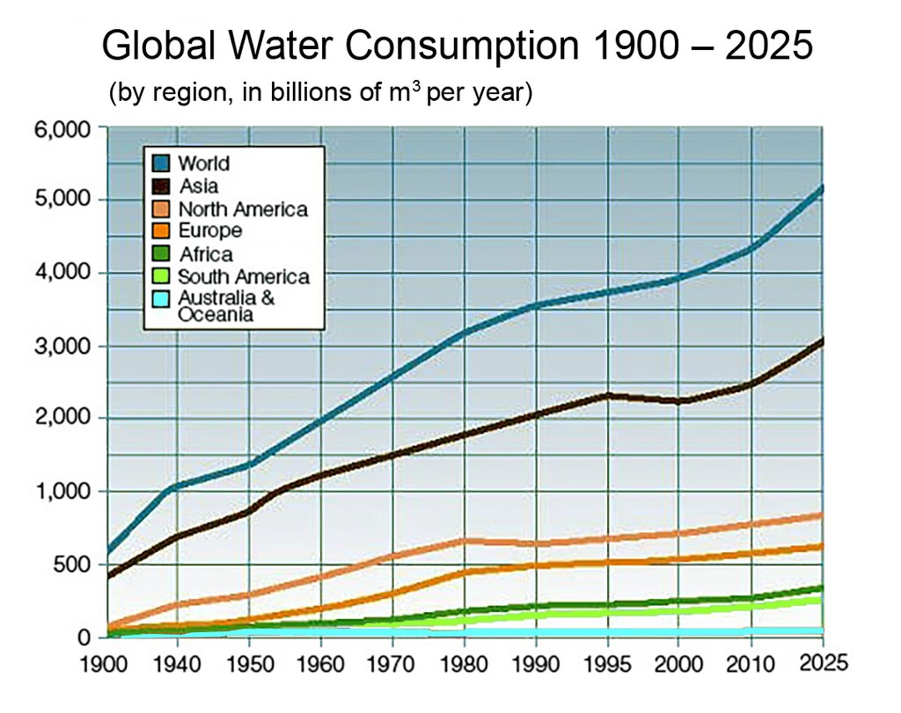

Save Water
Save Planate.
Water is necessary for the survival of each living creature on this planet, be it a small worm, plant, or full-grown tree. Animals and plants cannot survive without water. About 71% of Earth’s surface is covered with water.
Unfortunately, only 3% of the water available is freshwater. About two-thirds of the freshwater lies in the form of frozen glaciers and ice caps. The rest of the small portion is available in the form of groundwater and surface water.
 
